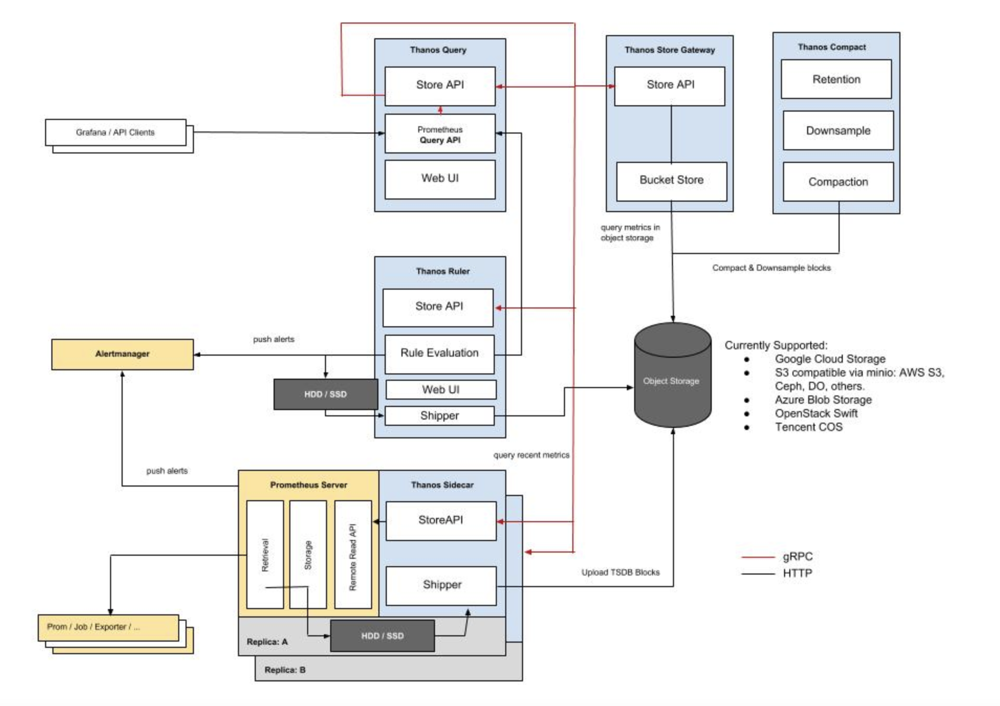
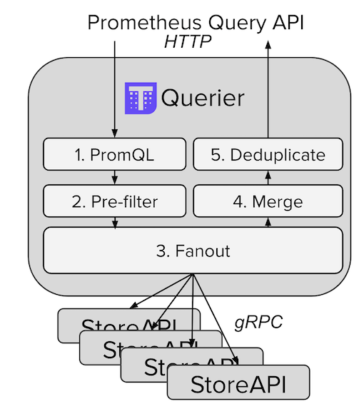
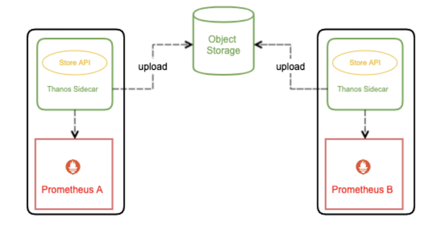
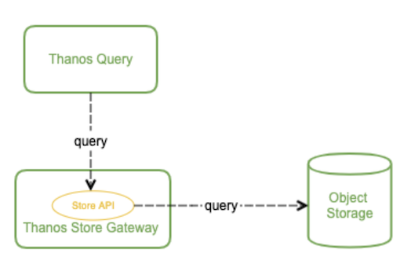
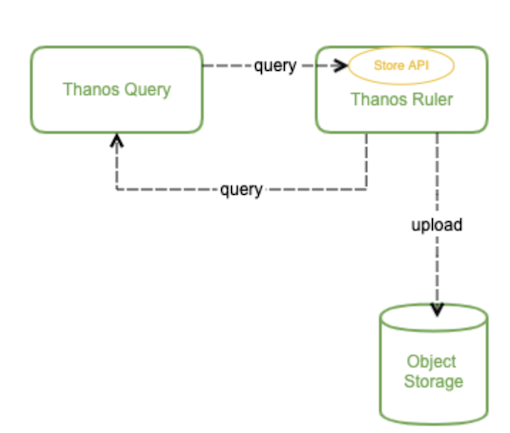
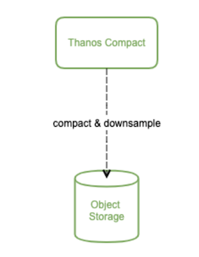
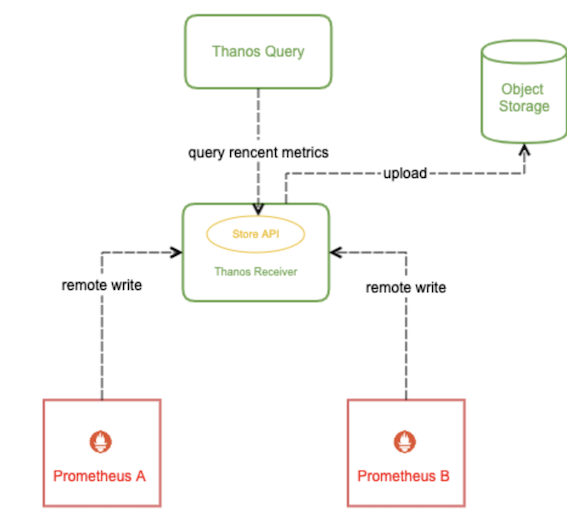

第七节 (Thaos2-2022)Thanos架构详解
Prometheus 优化到适配大规模场景，部署和后期维护麻烦且复杂不说，还有很多不完美的地方，并且还无法满足一些更高级的诉求，比如查看时间久远的监控数据，对于一些时间久远不常用的 “冷数据”，最理想的方式就是存到廉价的对象存储中，等需要查询的时候能够自动加载出来。
Thanos (没错，就是灭霸) 可以帮我们简化分布式 Prometheus 的部署与管理，并提供了一些的高级特性：全局视图，长期存储，高可用。下面我们来详细讲解一下。
1 Thanos 架构
这是官方给出的架构图：

这张图中包含了 Thanos 的几个核心组件，但并不包括所有组件，为了便于理解，我们先不细讲，简单介绍下图中这几个组件的作用：
- Thanos Query: 实现了 Prometheus API，将来自下游组件提供的数据进行聚合最终返回给查询数据的 client (如 grafana)，类似数据库中间件。
- Thanos Sidecar:
- 连接 Prometheus，将其数据提供给 Thanos Query 查询，
- 并且/或者将其上传到对象存储，以供长期存储。
- Thanos Store Gateway: 将对象存储的数据暴露给 Thanos Query 去查询。
- Thanos Ruler: 对监控数据进行评估和告警，还可以计算出新的监控数据，将这些新数据提供给 Thanos Query 查询并且/或者上传到对象存储，以供长期存储。
- Thanos Compact: 将对象存储中的数据进行压缩和降低采样率，加速大时间区间监控数据查询的速度。
1-1 架构设计剖析
如何理解 Thanos 的架构设计的？我们可以自己先 YY 一下，要是自己来设计一个分布式 Prometheus 管理应用，会怎么做？
Query 与 Sidecar
首先，监控数据的查询肯定不能直接查 Prometheus 了，因为会存在许多个 Prometheus 实例，每个 Prometheus 实例只能感知它自己所采集的数据。
我们可以比较容易联想到数据库中间件，每个数据库都只存了一部分数据，中间件能感知到所有数据库，数据查询都经过数据库中间件来查，这个中间件收到查询请求再去查下游各个数据库中的数据，最后将这些数据聚合汇总返回给查询的客户端，这样就实现了将分布式存储的数据集中查询。
那么 Thanos Query 又如何去查下游分散的数据呢？
Thanos 为此抽象了一套叫 Store API 的内部 gRPC 接口，其它一些组件通过这个接口来暴露数据给 Thanos Query，它自身也就可以做到完全无状态部署，实现高可用与动态扩展。

这些分散的数据可能来自哪些地方呢？
首先，Prometheus 会将采集的数据存到本机磁盘上，如果我们直接用这些分散在各个磁盘上的数据，可以给每个 Prometheus 附带部署一个 Sidecar，这个 Sidecar 实现 Thanos Store API，当 Thanos Query 对其发起查询时，Sidecar 就读取跟它绑定部署的 Prometheus 实例上的监控数据返回给 Thanos Query。

由于 Thanos Query 可以对数据进行聚合与去重，所以可以很轻松实现高可用：相同的 Prometheus 部署多个副本(都附带 Sidecar)，然后 Thanos Query 去所有 Sidecar 查数据，即便有一个 Prometheus 实例挂掉过一段时间，数据聚合与去重后仍然能得到完整数据。
这种高可用做法还弥补了我们上篇文章中用负载均衡去实现 Prometheus 高可用方法的缺陷：如果其中一个 Prometheus 实例挂了一段时间然后又恢复了，它的数据就不完整，当负载均衡转发到它上面去查数据时，返回的结果就可能会有部分缺失。
不过因为磁盘空间有限，所以 Prometheus 存储监控数据的能力也是有限的，通常会给 Prometheus 设置一个数据过期时间 (默认15天) 或者最大数据量大小，不断清理旧数据以保证磁盘不被撑爆。因此，我们无法看到时间比较久远的监控数据，有时候这也给我们的问题排查和数据统计造成一些困难。
对于需要长期存储的数据，并且使用频率不那么高，最理想的方式是存进对象存储，各大云厂商都有对象存储服务，特点是不限制容量，价格非常便宜。
Thanos 有几个组件都支持将数据上传到各种对象存储以供长期保存 (Prometheus TSDB 数据格式)，比如我们刚刚说的 Sidecar:

Store Gateway
那么这些被上传到了对象存储里的监控数据该如何查询呢？
理论上 Thanos Query 也可以直接去对象存储查，但会让 Thanos Query 的逻辑变的很重。
我们刚才也看到了，Thanos 抽象出了 Store API，只要实现了该接口的组件都可以作为 Thanos Query 查询的数据源，Thanos Store Gateway 这个组件也实现了 Store API，向 Thanos Query 暴露对象存储的数据。
Thanos Store Gateway 内部还做了一些加速数据获取的优化逻辑，一是缓存了 TSDB 索引，二是优化了对象存储的请求 (用尽可能少的请求量拿到所有需要的数据)。

这样就实现了监控数据的长期储存，由于对象存储容量无限，所以理论上我们可以存任意时长的数据，监控历史数据也就变得可追溯查询，便于问题排查与统计分析。
Ruler
有一个问题，Prometheus 不仅仅只支持将采集的数据进行存储和查询的功能，还可以配置一些 rules:
- 根据配置不断计算出新指标数据并存储，后续查询时直接使用计算好的新指标，这样可以减轻查询时的计算压力，加快查询速度。
- 不断计算和评估是否达到告警阀值，当达到阀值时就通知 AlertManager 来触发告警。
由于我们将 Prometheus 进行分布式部署，每个 Prometheus 实例本地并没有完整数据，有些有关联的数据可能存在多个 Prometheus 实例中，单机 Prometheus 看不到数据的全局视图，这种情况我们就不能依赖 Prometheus 来做这些工作，Thanos Ruler 应运而生，它通过查询 Thanos Query 获取全局数据，然后根据 rules 配置计算新指标并存储，同时也通过 Store API 将数据暴露给 Thanos Query，同样还可以将数据上传到对象存储以供长期保存 (这里上传到对象存储中的数据一样也是通过 Thanos Store Gateway 暴露给 Thanos Query)。

看起来 Thanos Query 跟 Thanos Ruler 之间会相互查询，不过这个不冲突，Thanos Ruler 为 Thanos Query 提供计算出的新指标数据，而 Thanos Query 为 Thanos Ruler 提供计算新指标所需要的全局原始指标数据。
至此，Thanos 的核心能力基本实现了，完全兼容 Prometheus 的情况下提供数据查询的全局视图，高可用以及数据的长期保存。
看下还可以怎么进一步做下优化呢？
Compact
由于我们有数据长期存储的能力，也就可以实现查询较大时间范围的监控数据，当时间范围很大时，查询的数据量也会很大，这会导致查询速度非常慢。
通常在查看较大时间范围的监控数据时，我们并不需要那么详细的数据，只需要看到大致就行。Thanos Compact 这个组件应运而生，它读取对象存储的数据，对其进行压缩以及降采样再上传到对象存储，这样在查询大时间范围数据时就可以只读取压缩和降采样后的数据，极大地减少了查询的数据量，从而加速查询。

再看架构图
上面我们剖析了官方架构图中各个组件的设计，现在再来回味一下这张图:
理解是否更加深刻了？
另外还有 Thanos Bucket 和 Thanos Checker 两个辅助性的工具组件没画出来，它们不是核心组件，这里也就不再赘述。
Sidecar 模式与 Receiver 模式
前面我们理解了官方的架构图，但其中还缺失一个核心组件 Thanos Receiver，因为它是一个还未完全发布的组件。这是它的设计文档: https://thanos.io/proposals/201812_thanos-remote-receive.md/
这个组件可以完全消除 Sidecar，所以 Thanos 实际有两种架构图，只是因为没有完全发布，官方的架构图只给的 Sidecar 模式。
Receiver 是做什么的呢？为什么需要 Receiver？它跟 Sidecar 有什么区别？
它们都可以将数据上传到对象存储以供长期保存，区别在于最新数据的存储。
由于数据上传不可能实时，Sidecar 模式将最新的监控数据存到 Prometheus 本机，Query 通过调所有 Sidecar 的 Store API 来获取最新数据，这就成一个问题：如果 Sidecar 数量非常多或者 Sidecar 跟 Query 离的比较远，每次查询 Query 都调所有 Sidecar 会消耗很多资源，并且速度很慢，而我们查看监控大多数情况都是看的最新数据。
为了解决这个问题，Thanos Receiver 组件被提出，它适配了 Prometheus 的 remote write API，也就是所有 Prometheus 实例可以实时将数据 push 到 Thanos Receiver，最新数据也得以集中起来，然后 Thanos Query 也不用去所有 Sidecar 查最新数据了，直接查 Thanos Receiver 即可。另外，Thanos Receiver 也将数据上传到对象存储以供长期保存，当然，对象存储中的数据同样由 Thanos Store Gateway 暴露给 Thanos Query。

如果规模很大，Receiver 压力会不会很大，成为性能瓶颈？当然设计这个组件时肯定会考虑这个问题，Receiver 实现了一致性哈希，支持集群部署，所以即使规模很大也不会成为性能瓶颈。